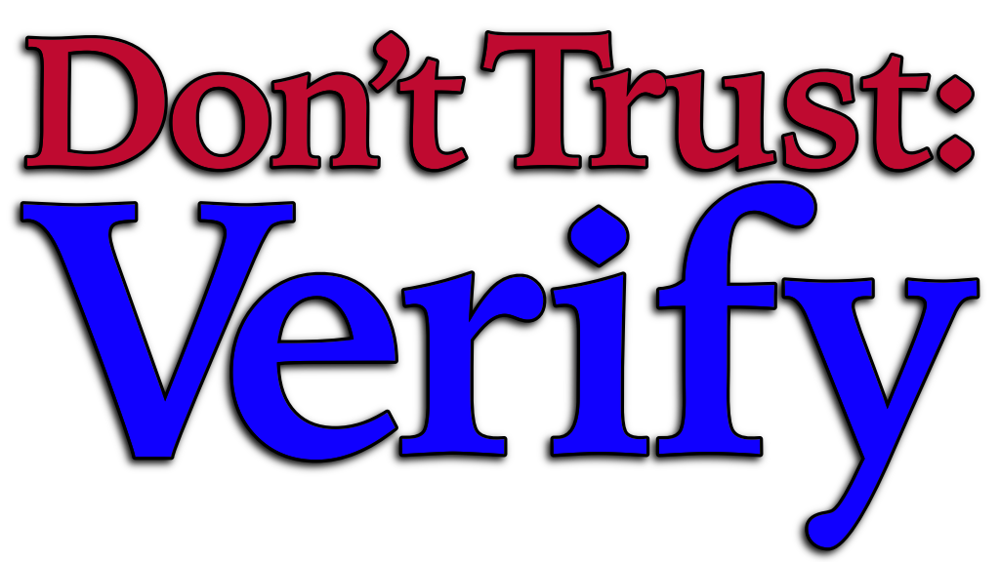

News media has changed. We don’t know who or what to believe, and we often believe things that we later find out were false. Should you believe that masks are necessary to keep children safe, or that they are harmful over time? Are gas price increases due to domestic choices, or international shortages? Is the Outrage of the Day™ part of a large and scary trend, or is it merely a trick to get you to click?
Most “Media Literacy” programs start with divining which media sources to trust, but this is totally wrong: all reputable sources get things wrong every day. Most fact-checkers are regularly wrong, too. Don’t Trust: Verify - A Field Guide to Bad Journalism is different: it explains why you shouldn’t trust any of them. You can’t be an expert on everything, but that doesn’t mean you have to believe everything you’re told. This book answers the question: How do you know what to believe?
Don’t Trust: Verify - A Field Guide to Bad Journalism is an indispensable book for understanding journalism in the 2020s and beyond. It explains how the news media got the way it is, helps you understand what it is really saying, and gives you tools to find the truth behind it.
Book Resources
- Playlists
- These are songs mentioned in or relating to the book. Note: some songs have explicit lyrics.
- Apple Music (clean)
- Spotify (clean)
About the Author
My name is Chris Nandor. I have a degree in journalism, but don’t hold that against me. I decided I hated the news business, and learned to code. I’ve written many articles and some books about computer programming, as well as lots of software. I’ve written many songs. I’ve written analyses of laws and bills and court decisions. I’ve written an embarrassing number of posts on social media and newsgroups and bulletin boards.
I write a lot.
In all of my writing, one of the recurring themes is that I like people to be well-informed. It’s a big part of why I got into journalism. Therefore, I despise misinformation. It’s a big part of why I got out of journalism.
I can’t make you well-informed. I can’t write about every issue that people aren’t well-informed about, and get them to read and believe what I write. But I can help people figure out how to be well-informed on their own.
I’ve been a consumer and critic of news media for decades, I’ve learned a lot, and I believe this book is going to help you.


Last modified .